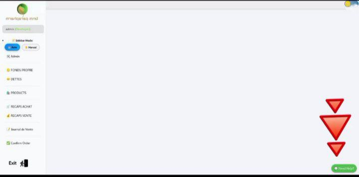

Dark mode toggle - Switch between light and dark themes easily.
Note: Toggle the switch before opening multiple tabs for consistent theme use, or close and reopen tabs to apply the new theme.
New tabs system - Discover new tabs added inside the main interface
Improved navigation - Smoother and more intuitive user experience
Auto sidebar - To activate, move your mouse to the top-left corner of the screen
Feedback system - Report bugs, suggest features, or rate us through BNM Bot
×
Auto Sidebar Activation
Move your mouse to the top-left corner to activate the auto sidebar.
×
BNM Bot Interface

Use BNM Bot to report issues, suggest features, or rate our service.